Ảnh món Yumwell (110)

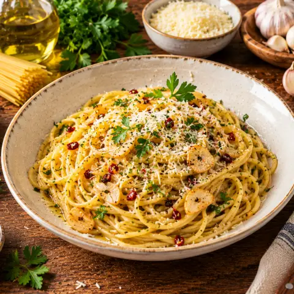
Mì Ý tỏi dầu ô liuaglio-e-olio
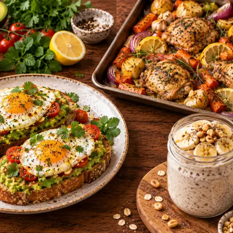
Bánh mì nướng bơ và trứngavocado-toast
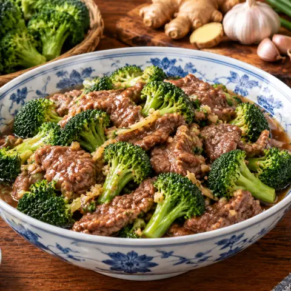
Bò xào bông cải xanhbeef-broccoli Cơm trộn Hàn Quốcbibimbap
Cơm trộn Hàn Quốcbibimbap
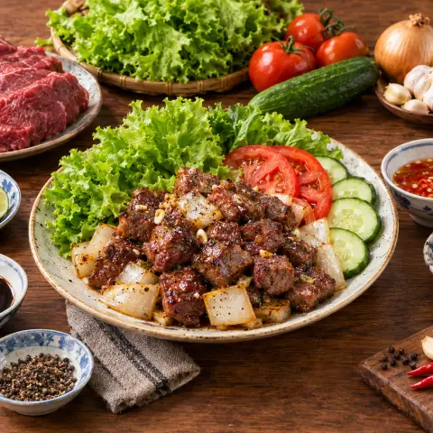
Bò lúc lắcbo-luc-lac
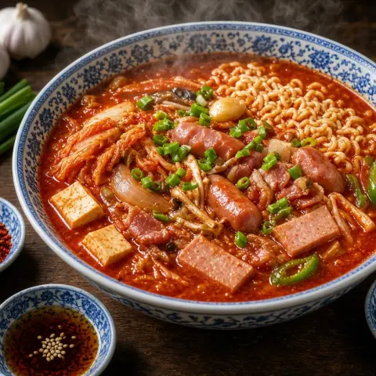
Lẩu quân đội Hàn Quốc (Budae Jjigae)budae-jjigae
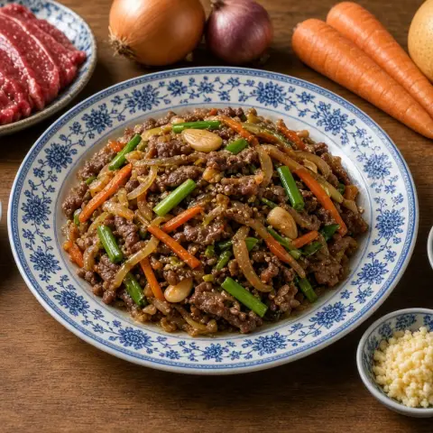
Bò nướng bulgogibulgogi
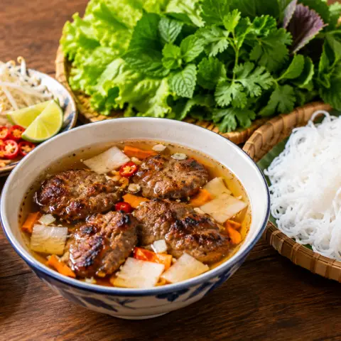
Bún chảbun-cha
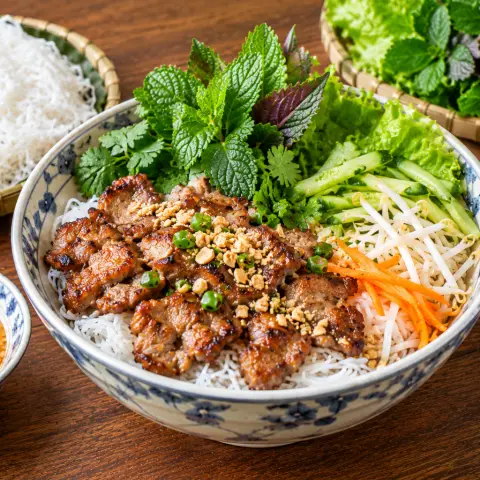
Bún thịt nướngbun-thit-nuong
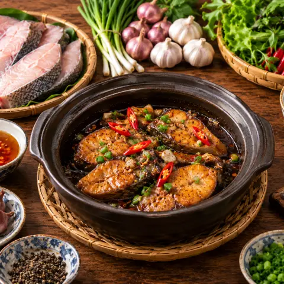
Cá kho tộca-kho-to
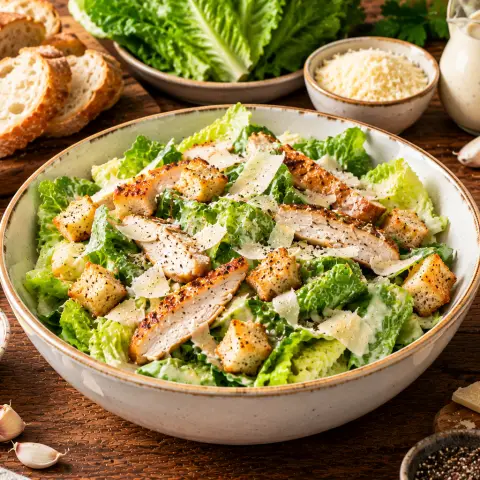
Salad Caesarcaesar-salad Canh bí đỏ nấm chaycanh-bi-do
Canh bí đỏ nấm chaycanh-bi-do Canh chua cácanh-chua-ca
Canh chua cácanh-chua-ca Mì Ý Carbonaracarbonara
Mì Ý Carbonaracarbonara
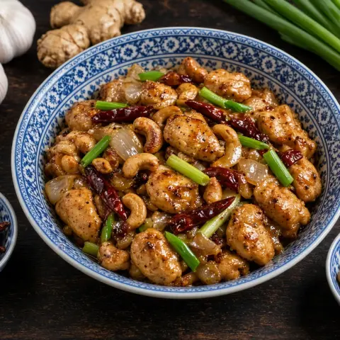
Gà xào hạt điều kiểu Tháicashew-chicken-thai Chả giòcha-gio
Chả giòcha-gio
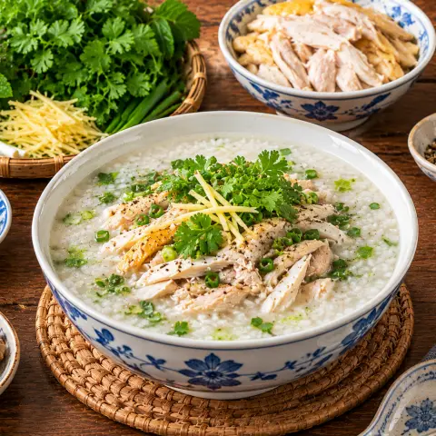
Cháo gàchao-ga Xá xíuchar-siu
Xá xíuchar-siu
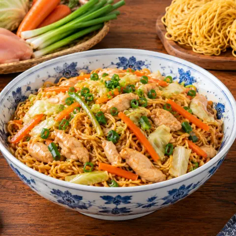
Mì xào gàchicken-chow-mein Súp gà mì sợi kiểu Âuchicken-noodle-soup
Súp gà mì sợi kiểu Âuchicken-noodle-soup
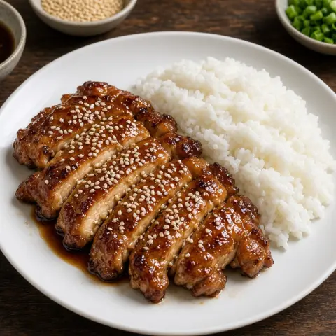
Gà sốt teriyakichicken-teriyakiTrứng ốp lết phô maiclassic-omelette

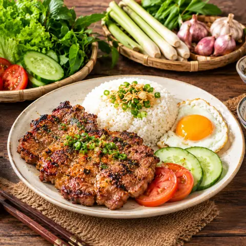
Cơm sườn nướng sảcom-suon Gà hầm cay Hàn Quốcdakdoritang
Gà hầm cay Hàn Quốcdakdoritang Gà xào cay kiểu Hàn (Dakgalbi)dakgalbi
Gà xào cay kiểu Hàn (Dakgalbi)dakgalbi
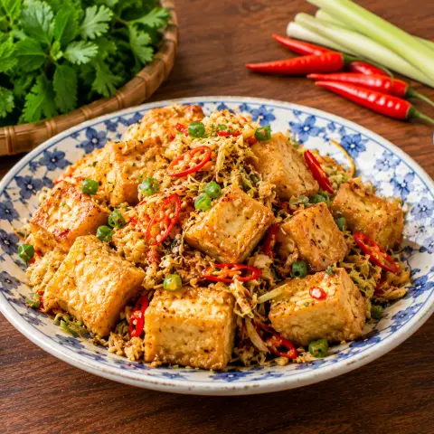
Đậu hũ chiên sả ớtdau-hu-chien-sa
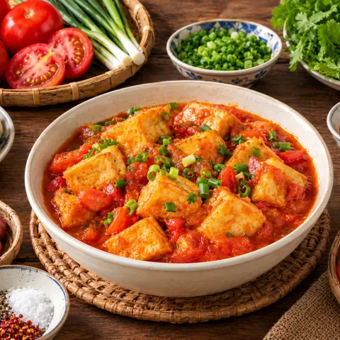
Đậu sốt cà chuadau-sot-ca-chua
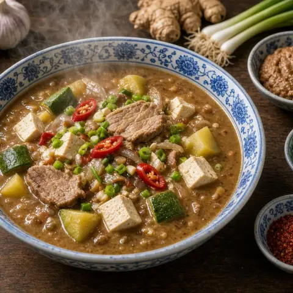
Canh tương đậu Hàn Quốc (Doenjang)doenjang-jjigae
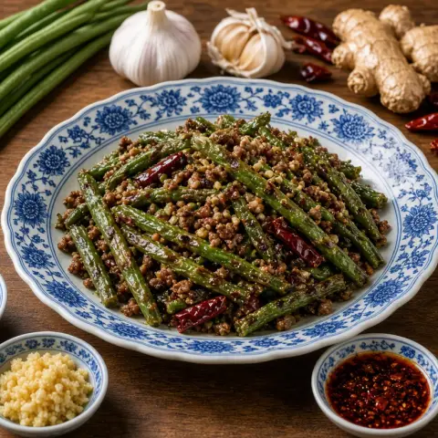
Đậu que xào khô kiểu Tứ Xuyêndry-fried-green-beans
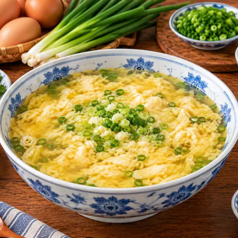
Canh trứng kiểu Hoaegg-drop-soupCơm chiên trứngegg-fried-rice
 Bánh pancake bông xốpfluffy-pancakes
Bánh pancake bông xốpfluffy-pancakes
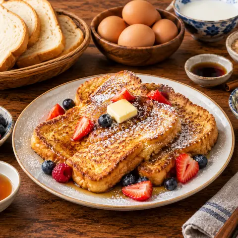
Bánh mì nướng trứng (French toast)french-toast
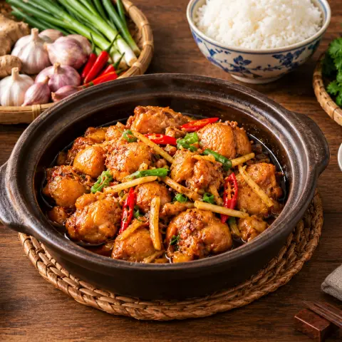
Gà kho gừngga-kho-gung Gà xào sả ớtga-xao-sa-ot
Gà xào sả ớtga-xao-sa-ot
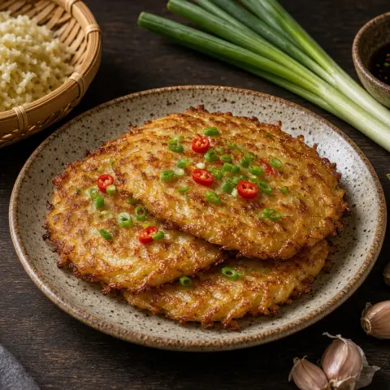
Bánh khoai tây Hàn Quốcgamja-jeon
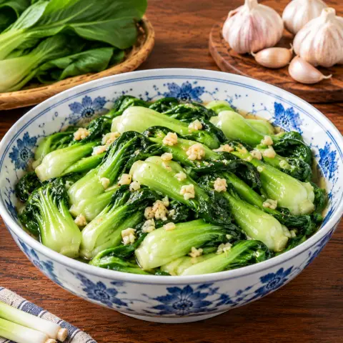
Cải chíp xào tỏigarlic-bok-choy Bò bít tết bơ tỏigarlic-butter-steak
Bò bít tết bơ tỏigarlic-butter-steak
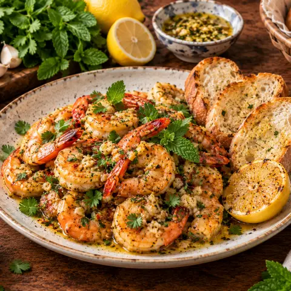
Tôm sốt bơ tỏigarlic-prawns Gỏi cuốn tômgoi-cuon
Gỏi cuốn tômgoi-cuon
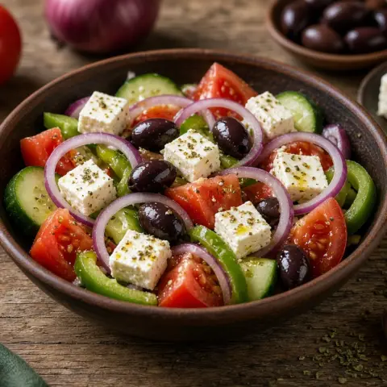
Salad Hy Lạpgreek-saladCà ri xanh Tháigreen-curry
 Trứng hấp kiểu Hàngyeran-jjim
Trứng hấp kiểu Hàngyeran-jjim
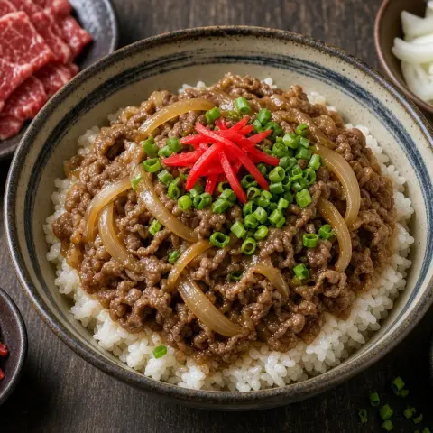
Cơm bò Gyudongyudon Thịt kho kiểu Thượng Hải (Hồng thiêu nhục)hong-shao-rou
Thịt kho kiểu Thượng Hải (Hồng thiêu nhục)hong-shao-rou
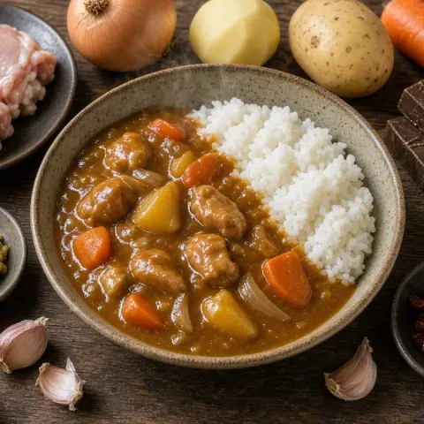
Cà ri gà Nhậtjapanese-curry
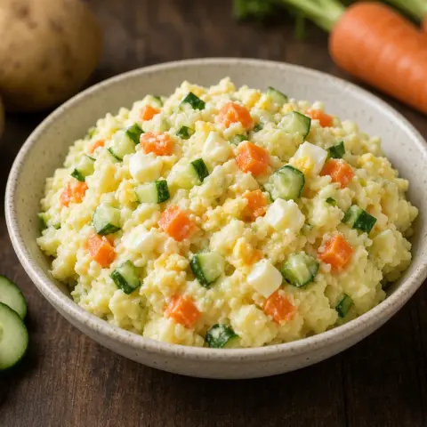
Salad khoai tây kiểu Nhậtjapanese-potato-salad
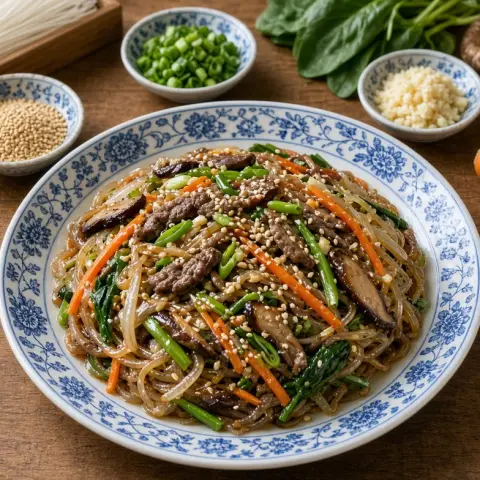
Miến trộn Hàn Quốc (Japchae)japchae Heo xào cay Hàn Quốc (Jeyuk Bokkeum)jeyuk-bokkeum
Heo xào cay Hàn Quốc (Jeyuk Bokkeum)jeyuk-bokkeum Cháo Thái (Jok)jok
Cháo Thái (Jok)jok
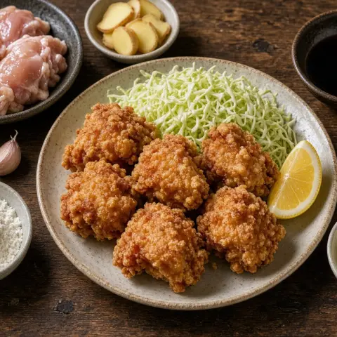
Gà chiên kiểu Nhật (Karaage)karaage Cơm thịt heo chiên xù trứng (Katsudon)katsudon
Cơm thịt heo chiên xù trứng (Katsudon)katsudon
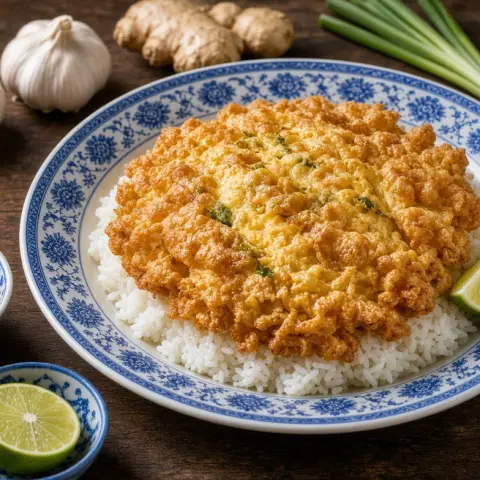
Trứng chiên giòn kiểu Tháikhai-jiao
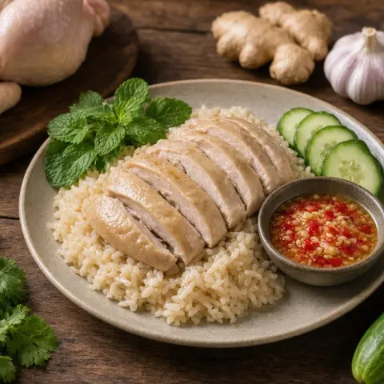
Cơm gà luộc kiểu Thái (Khao man gai)khao-man-gai
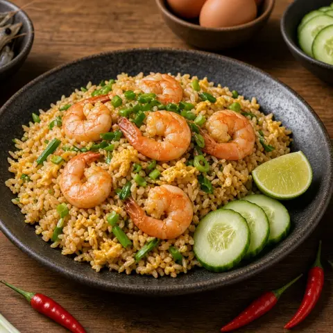
Cơm chiên tôm kiểu Tháikhao-pad
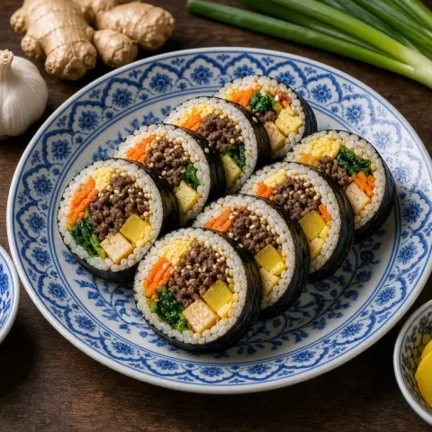
Cơm cuộn Hàn Quốc (Kimbap)kimbap
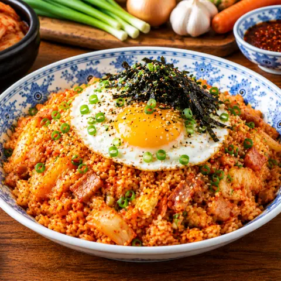
Cơm chiên kim chikimchi-fried-rice
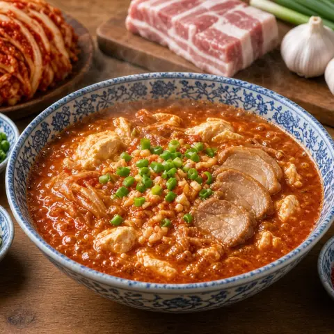
Canh kim chikimchi-jjigae
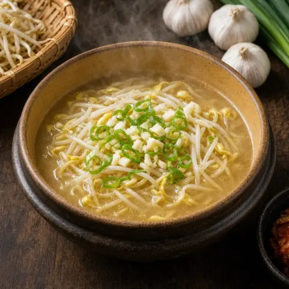
Canh giá đỗ Hàn Quốckongnamul-guk Gà xào Cung Bảokung-pao-chicken
Gà xào Cung Bảokung-pao-chicken
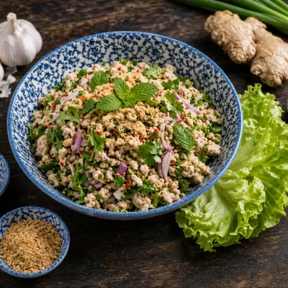
Gỏi gà kiểu Thái (Larb)larb-gai
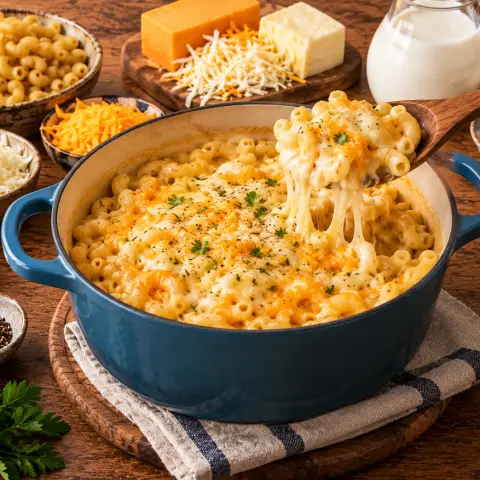
Nui phô mai một nồimac-and-cheese
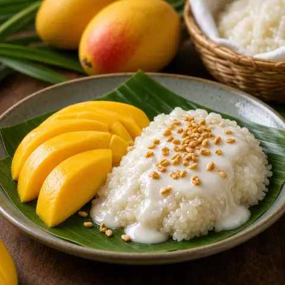
Xôi xoài Tháimango-sticky-rice Đậu phụ Tứ Xuyên (Mapo)mapo-tofu
Đậu phụ Tứ Xuyên (Mapo)mapo-tofu Súp miso đậu phụmiso-soup
Súp miso đậu phụmiso-soup
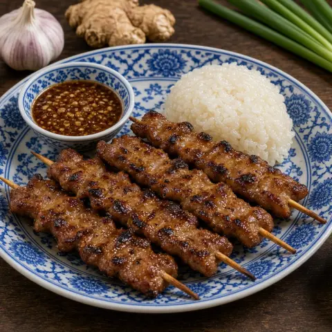
Heo nướng xiên Thái ăn xôimoo-ping
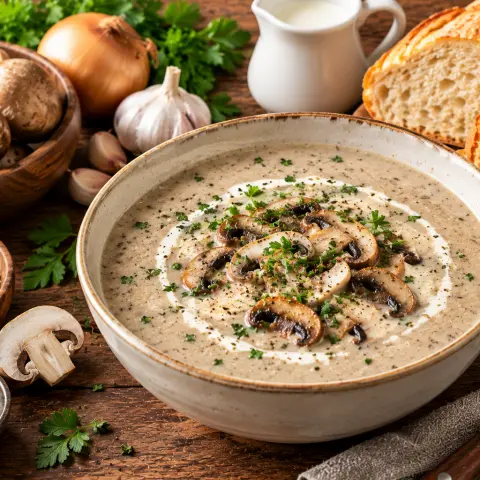
Súp kem nấmmushroom-soup
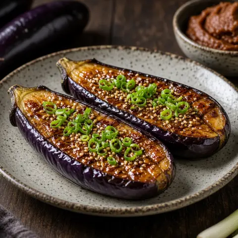
Cà tím nướng sốt misonasu-dengaku
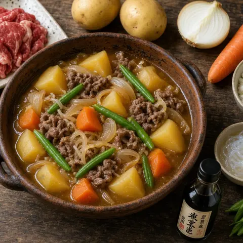
Bò hầm khoai tây kiểu Nhật (Nikujaga)nikujaga Bánh xèo Nhật (Okonomiyaki)okonomiyaki
Bánh xèo Nhật (Okonomiyaki)okonomiyaki
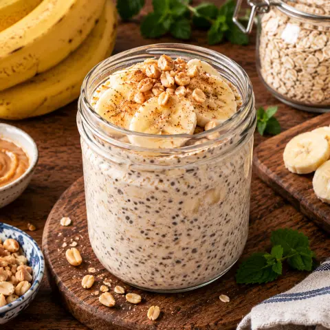
Yến mạch ngâm qua đêm với chuốiovernight-oats
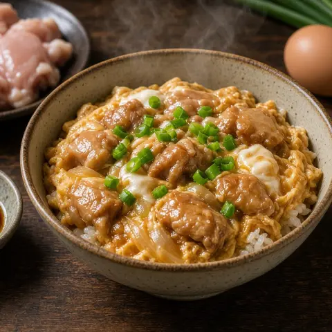
Cơm gà trứng Oyakodonoyakodon
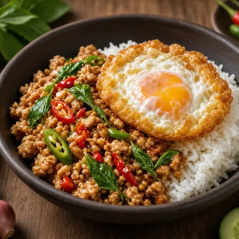
Gà xào húng quế Tháipad-kra-pao
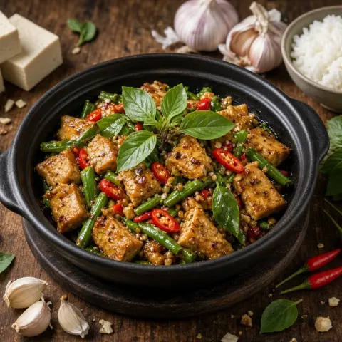
Đậu hũ xào lá húng kiểu Tháipad-kra-pao-tofu
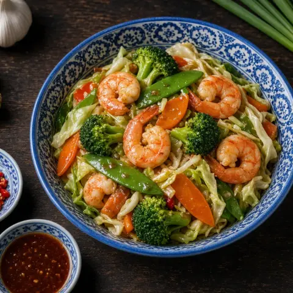
Rau củ xào tôm kiểu Tháipad-pak-ruamPhở xào xì dầu kiểu Tháipad-see-ewPad Thái gàpad-thaiMiến xào kiểu Thái (Pad woon sen)pad-woon-senPhở bòpho-boRau muống xào tỏirau-muong-xao-toiSúp cà chua nướngroasted-tomato-soup


 Cá hồi sốt teriyakisalmon-teriyakiBánh hành chiênscallion-pancakesGà nướng chanh thảo mộc một khaysheet-pan-chickenCá hồi muối nướng kiểu NhậtshiozakeThịt heo xào gừng kiểu Nhật (Shogayaki)shogayaki
Cá hồi sốt teriyakisalmon-teriyakiBánh hành chiênscallion-pancakesGà nướng chanh thảo mộc một khaysheet-pan-chickenCá hồi muối nướng kiểu NhậtshiozakeThịt heo xào gừng kiểu Nhật (Shogayaki)shogayaki


 Rau chân vịt trộn kiểu Hànsigeumchi-namulDưa leo đập trộn tỏismashed-cucumberGỏi đu đủ kiểu Thái (Som Tam)som-tamMì Ý sốt bò bằmspaghetti-bologneseCanh đậu phụ non cay (Sundubu)sundubu-jjigae
Rau chân vịt trộn kiểu Hànsigeumchi-namulDưa leo đập trộn tỏismashed-cucumberGỏi đu đủ kiểu Thái (Som Tam)som-tamMì Ý sốt bò bằmspaghetti-bologneseCanh đậu phụ non cay (Sundubu)sundubu-jjigae


 Thịt heo xào chua ngọtsweet-sour-porkTrứng cuộn kiểu Nhật (Tamagoyaki)tamagoyakiĐậu hũ chiên chấm sốt chua ngọt đậu phộngtao-hu-tod
Thịt heo xào chua ngọtsweet-sour-porkTrứng cuộn kiểu Nhật (Tamagoyaki)tamagoyakiĐậu hũ chiên chấm sốt chua ngọt đậu phộngtao-hu-tod

 Cà ri đỏ gà kiểu Tháithai-red-curryThịt kho trứngthit-kho-trung
Cà ri đỏ gà kiểu Tháithai-red-curryThịt kho trứngthit-kho-trung
 Thịt rang cháy cạnhthit-rang-chay-canh
Thịt rang cháy cạnhthit-rang-chay-canh Gà tam bôi (gà ba chén)three-cup-chicken
Gà tam bôi (gà ba chén)three-cup-chicken Súp gà nước cốt dừa Tom Khatom-kha-gaiCanh Tom Yumtom-yum
Súp gà nước cốt dừa Tom Khatom-kha-gaiCanh Tom Yumtom-yum
 Trứng xào cà chuatomato-eggThịt heo chiên xù TonkatsutonkatsuTrứng chiên thịt bằmtrung-chien-thit-bamBánh gạo cay TteokbokkitteokbokkiSúp hoành thánhwonton-soup
Trứng xào cà chuatomato-eggThịt heo chiên xù TonkatsutonkatsuTrứng chiên thịt bằmtrung-chien-thit-bamBánh gạo cay TteokbokkitteokbokkiSúp hoành thánhwonton-soup


 Xôi đậu xanhxoi-dau-xanhCơm nắm nướng Nhậtyaki-onigiriMì xào YakisobayakisobaCà tím xào kiểu Tứ Xuyênyu-xiang-eggplant
Xôi đậu xanhxoi-dau-xanhCơm nắm nướng Nhậtyaki-onigiriMì xào YakisobayakisobaCà tím xào kiểu Tứ Xuyênyu-xiang-eggplant


 Mì soba lạnh (Zaru Soba)zaru-soba
Mì soba lạnh (Zaru Soba)zaru-soba